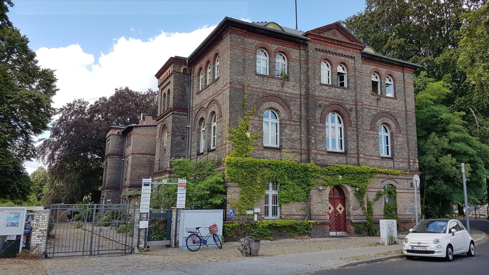
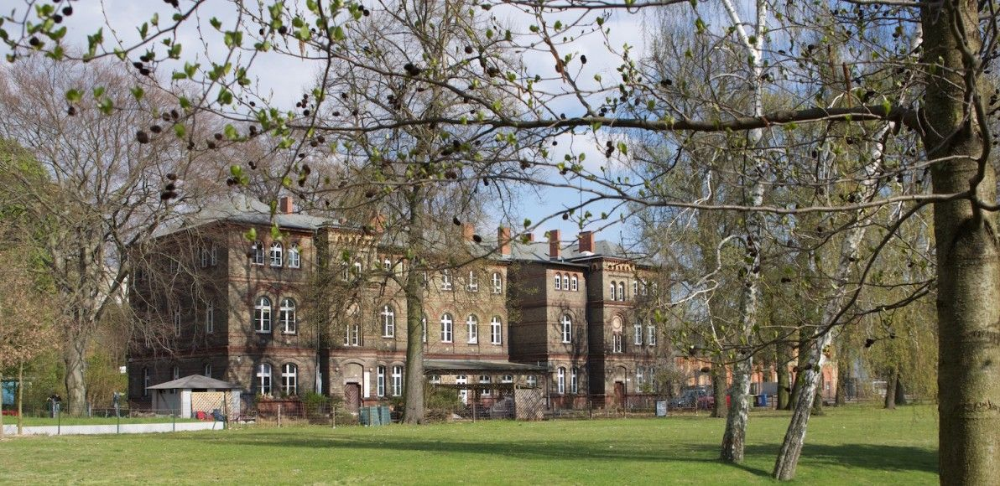
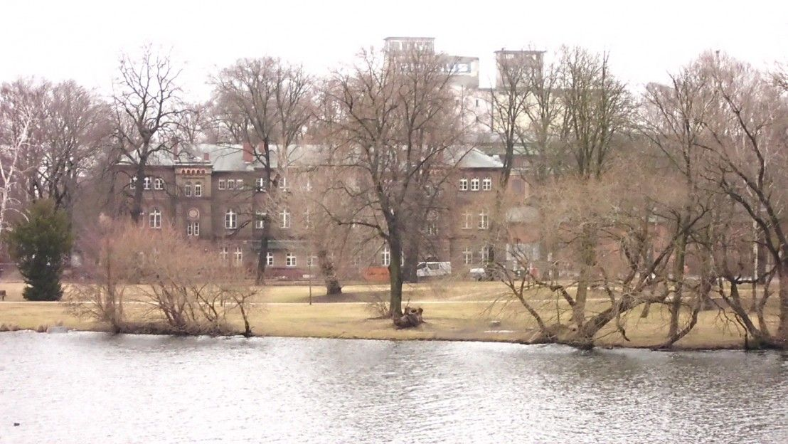

Gemeinnützig · Selbstverwaltet · Seit 2010
Arbeiten & Leben
in Eigenregie
Ein gemeinnütziges Gemeinschaftsprojekt im denkmalgeschützten Ziegelbau auf der Insel Eiswerder in Berlin-Spandau – mit Büros, Studios, Werkstätten, Ateliers und einem Veranstaltungsraum, den auch Sie mieten können.

Der Veranstaltungsraum
InselSalon
Rund 80 m² für Tagung, Seminar, Konzert, Ausstellung oder Ihre Feier – schwellenfreier Zugang möglich, dazu Beamer, WLAN und Klavier, direkt am Park an der Havel.
- ca. 80 m²
- WLAN kostenfrei
- Beamer & Leinwand
- Klavier
- Teeküche
- Küche + Terrasse zubuchbar

01 / Das Haus
Ein Haus,
viele Macher:innen
Seit 2010 arbeiten und leben wir in Eigenregie im ehemaligen Verwaltungsgebäude für die Schießpulververarbeitung des Königlichen Feuerwerkslaboratoriums – einem Ziegelbau von 1893/94, der heute unter Denkmalschutz steht.
Akteur:innen mit ganz unterschiedlichen Berufen, aus verschiedenen Nationen und Lebenssituationen haben das Projekt von Anfang an geprägt – mit einem hohen Anteil ehrenamtlicher Arbeit. Entstanden sind Büros, Studios, Werkstätten, Ateliers und Veranstaltungsräume.
Das Haus wurde in Teilbereichen ökologisch umgebaut. Unsere gemeinnützige gGmbH fördert Denkmalschutz und Denkmalpflege, Naturschutz und Landschaftspflege sowie Umwelt- und Klimaschutz.
- 1893/94erbaut
- 2010Projektbeginn
- 1.246 m²Nutzfläche
- 3Naturdenkmäler

Der Ort
Eine Insel
in der Havel
Eiswerder13 liegt am Rande des Eiswerder-Parks, umgeben vom Wasser der Havel und des Spandauer Sees – und doch mitten in der Stadt. Zwei Brücken verbinden die Insel mit dem Festland: die Große Eiswerderbrücke im Westen und die Kleine Eiswerderbrücke im Osten.
Auf dem Grundstück stehen drei unter Naturschutz stehende Bäume – eine Rotbuche und zwei Eiben. Zum Ausklang mancher Veranstaltung gibt es eine Kostprobe des selbst gebrauten Eiswerder-Inselbiers.
S+U Rathaus Spandau → Bus M36 / 136 → Haltestelle Eiswerderstraße


Worum es hier noch geht

Rückblick · September 2026
Tag des offenen Denkmals
So, 13.09.2026 · 15:00 Uhr · InselSalon
Vorträge zur Geschichte der Insel und des Hauses, Führungen durch das Denkmalgebäude und den Garten zu den drei Naturdenkmälern – und zum Ausklang eine Kostprobe des Eiswerder-Inselbiers vom Fass.
Kontakt
Fragen? Einfach melden.
denk-mal EISWERDER13 gGmbH · Eiswerderstraße 13–13a · 13585 Berlin-Spandau